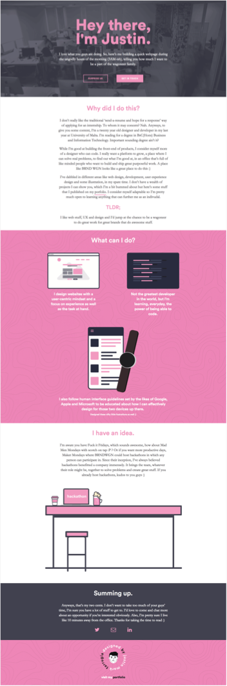
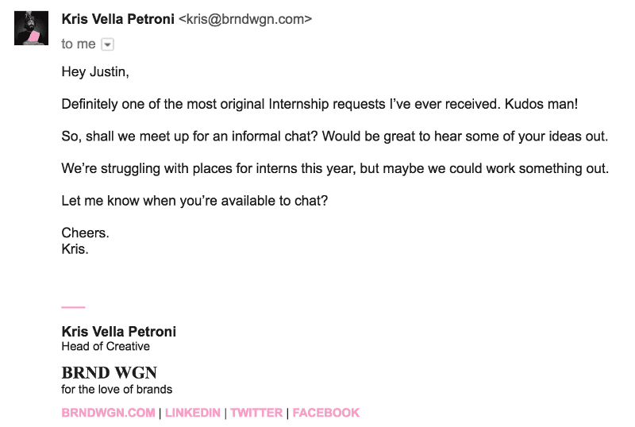

When BRNDWGN had launched their internship program along with the redesign of their new site, I was telling myself day in day out that I was going to apply. I must have written about six drafts before I decided to remotely do anything. “What if?” was the question that always preceeded some pointless conclusion of why I should hold off from pressing send.
Why the hesitation? Well, you see BRNDWGN was (and still is) THE place to be if you were a creative in Malta. I was always telling myself: “You have to do [insert sideproject here] before they can even consider you”. While I still maintain this train of thought, it still felt like I was somewhat at odds with myself. And then I realized something pretty important.
Doing something about it.
Not doing anything was holding me back tenfold. So, I grabbed my trusty pencil and pad, and started sketching ideas. I had read about Nina Muffleh some time ago, who went above and beyond by building a website so that she could land a position at Airbnb and get recruiters talking.
As a self-starter myself, I really respected her drive and commitment as well as her courage. Naturally, I was influenced by her approach. So I went ahead and decided to do the same kind of thing to land that internship. So I built a website and well, here it is.

A bit of a gimmick, but hey I had fun building it
Admittedly, that one-pager accompanied with a pretty boldly worded email took some courage. I mean it’s not like I knew these guys, I just heard the CEO (Hey Pete) speak at a local meetup and was like “Man these guys seem like they do great work”. Two days after finally pressing send, an email from the Head of Creative showed up in my inbox. That fourth line was a bit heart-wrenching, but nevertheless I visited the office to have a chat, and was offered an internship.
